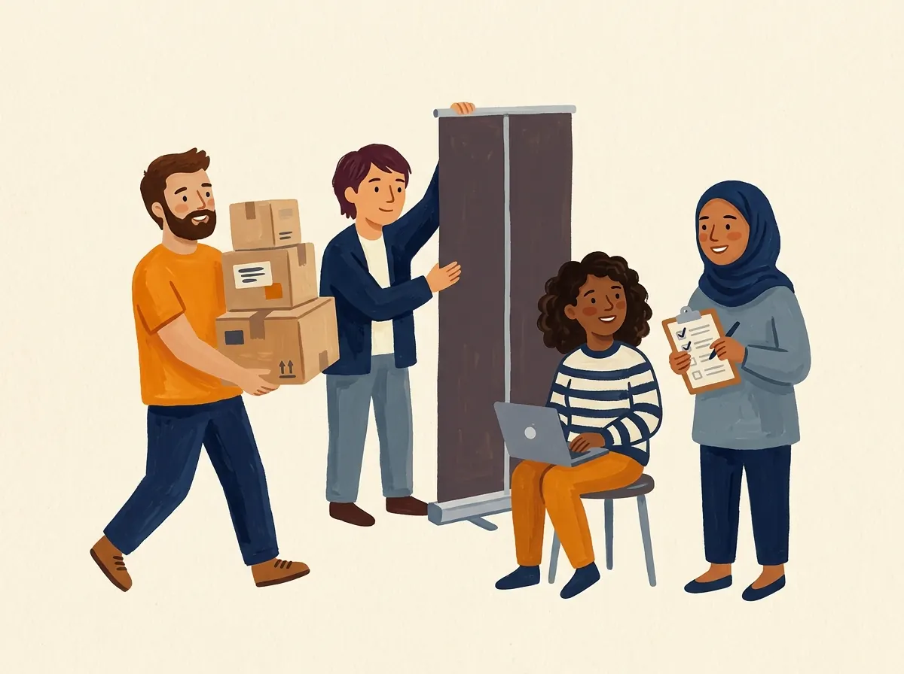

PyCon JP 2027
開催日程
主催メンバー募集
申し込む
PyCon JP
2027 沼津
2027.9.24 金 – 26 日
沼津プラサヴェルデ
主催メンバー募集
開催日程
SCHEDULE
2027年9月、静岡県沼津市で
PyCon JP を開催します。
24
FRI
25
SAT
26
SUN
日程
2027年9月24日（金）〜26日（日）
会場
沼津プラサヴェルデ
（静岡県沼津市）
期間
3日間（金・土・日）
主催
一般社団法人
PyCon JP Association
主催メンバー募集
JOIN US
CORE STAFF
コアスタッフ
継続参加
定例ミーティング
企画〜当日運営
SUPPORT STAFF
サポートスタッフ
タスクを選ぶ
時間帯を選ぶ
できる範囲で
メイン
1つ選ぶ
企画
会場
参加者
協賛
広報
かけもちOK
開発
デザイン
地域連携

1
フォームで申し込み
Google フォーム
2
Slackに招待
運営の連絡はSlack
3
オンボーディング
説明を聞いてチーム決定
無償ボランティア
日本語で日常会話
行動規範
に同意
交通・宿泊は自己負担の場合あり
主催メンバーに申し込む
運営の経験がなくても大丈夫です